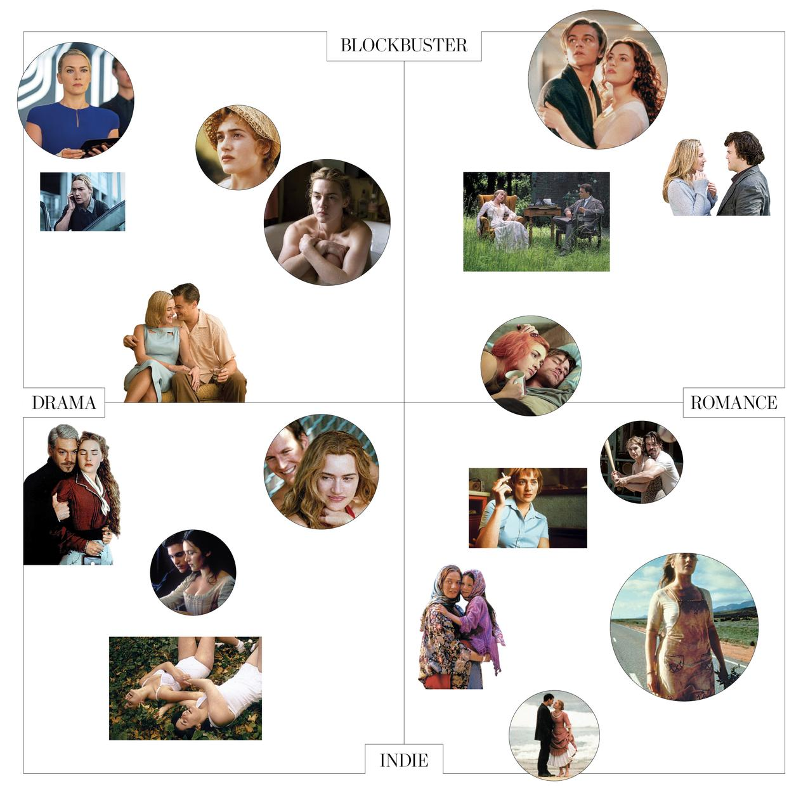

1
2
3
4
5
6
7
8
9
10
11
12
13
14
15
16
17
18
19
20
21
22
23

©lfi/photoshot (6); © photoshot/collection christophel (3); © af archive/alamy stock photo (4); © face to face/photoshot; © moviestore collection ltd/alamy stock photo (2); © photoshot;© moviestore collection ltd/alamy stock photo
1. Divergent (2014) & Insurgent (2015)
2. Contagion (2011)
3. Sense and Sensibility (1995)
4. The Reader (2008)
Won Oscar for best actress.
5. All the King's Men (2006)
6. The Life of David Gale (2003)
7. Revolutionary Road (2008)
Winslet recruited Leonardo DiCaprio to star with her.
8. Titanic (1997)
Winslet’s highest-grossing film; Oscar nomination for best actress.
9. The Holiday (2006)
10. Finding Neverland (2004)
11. Eternal Sunshine of the Spotless Mind (2004)
12. Labor Day (2013)
13. Iris (2001)
14. Holy Smoke (1999)
15. Hideous Kinky (1998)
Set on which she met her first husband.
16. Enigma (2001)
17. Little Children (2006)
18. Quills (2000)
19. Heavenly Creatures (1994)
Her big-screen debut. One reviewer wrote, “Winslet is a bright-eyed ball of fire, lighting up every scene she’s in.”
20. A Little Chaos (2014)
21. Carnage (2011)
22. Hamlet (1996)
23. Jude (1996)